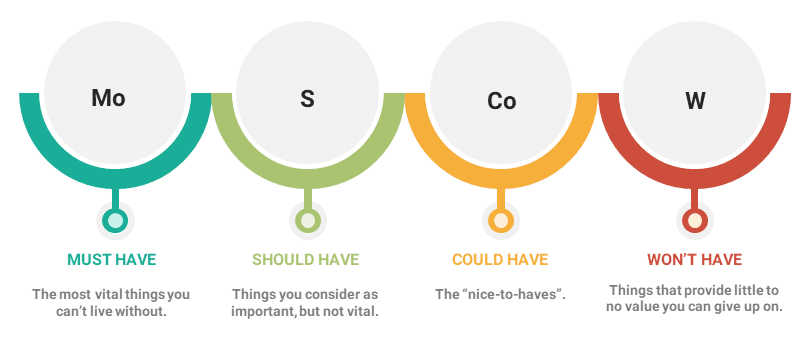

MoSCoW
O método MoSCoW é uma técnica de priorização usada na gestão como um todo, análise de negócios, gestão de projetos e desenvolvimento de softwares com o intuito de encontrar um entendimento em comum entre as partes interessadas sobre a importância que elas atribuem a cada requisito.
A técnica de priorização MoSCoW tem um papel fundamental em metodologias ágeis. Em um projeto ágil, é vital entender a importância de coisas diferentes. Isso acontece porque o tempo é um recurso fixo, então a priorização é aplicada a requisitos, tarefas, serviços, produtos, cases, etc. O termo MoSCoW é um acrônimo em inglês derivado da primeira letra de cada uma das quatro categorias com os “Os” no meio para fazer a palavra ser pronunciável. Fica assim:
Must Have (Tenho que fazer)
Should Have (Devo fazer)
Could Have (Poderia fazer)
Won’t Have (Não vou fazer)
Nesse sentido, a ordem de importância das tarefas vai seguindo uma ordem decrescente, onde Must Have são as mais relevantes e as Won’t Have as que podem ficar para depois.
É necessário dizer, no entanto, que a tradução dos termos para o português não é totalmente correta, pois algumas expressões em inglês não tem correlação direta com palavras do nosso vocabulário.
Quando usar o método MoSCoW?
O método MoSCoW é bastante efetivo para times que queiram incluir representantes de todos os departamentos da empresa no processo, conseguindo uma perspectiva mais ampla do projeto.
Uma outra razão de usar o MoSCoW é que ele permite às equipes determinarem quanto esforço será despendido para cada categoria. Portanto, você pode se assegurar de estar desenvolvendo uma boa variedade de soluções em cada entrega.
Por que usar o método MoSCoW?
O uso da técnica MoSCoW funciona particularmente bem em projetos. Ela também supera alguns problemas associados com abordagens mais simplistas de priorização baseadas em prioridades relativas. Veja problemas abaixo:
A utilização de uma classificação alta, média ou baixa simples é mais fraca, porque as definições dessas prioridades estão ausentes ou precisam ser definidas e não fornecem à empresa uma promessa clara do que esperar. Uma categorização com uma única opção mediana, como média, também permite indecisão; o uso de um método sequencial 1,2,3,4… é mais fraco também, pois lida de maneira menos eficaz com itens de importância similar. Podem haver discussões prolongadas e fervorosas sobre se uma tarefa deve ser colocada acima de outras.
Dessa forma, o uso específico das categorias do MoSCoW fornecem uma indicação clara de determinada tarefa e suas expectativas de conclusão.
Quais são as vantagens e desvantagens do MoSCoW?
A priorização MoSCoW é ótima para ranquear e classificar itens com o intuito de conseguir uma entrega bem feita. Os benefícios principais são os seguintes:
é baseada na opinião experiente do time;
fácil e rápida de completar;
é boa em definir as prioridades de projetos em andamento.
Entanto, alguns pontos de atenção são:
As regras do MoSCoW podem ser subjetivas. Se não existe cooperação o suficiente na agência, a priorização pode ficar imprecisa;
A técnica necessita que o time tenha uma boa familiaridade com as características do serviço a ser entregue. Quando os participantes têm diferentes níveis de conhecimento nesse sentido, fica difícil para eles classificarem e ranquearem as tarefas.

Aplicando no nosso Projeto:
| Número | Requisito | Prioridade |
|---|---|---|
| 1 | O usuário deve ser capaz de visualizar notícias | Could |
| 2 | O usuário deve ser capaz de visualizar horário dos trens | Must |
| 3 | O usuário deve ser capaz de atualizar horário dos trens | Must |
| 4 | O usuário deve ser capaz de falar com a ouvidoria | Must |
| 5 | O usuário deve ser capaz de recarregar cartão do metrô | Could |
| 6 | O usuário deve ser capaz de visualizar o mapa da linha do metrô | Must |
| 7 | O usuário deve ser capaz de se cadastrar | Could |
| 8 | O usuário deve ser capaz de realizar login em sua conta cadastrada | Should |
| 9 | O usuário deve ser capaz de visualizar o horário de funcionamento das estações | Must |
| 10 | O usuário deve ser capaz de visualizar o tempo de chegada dos trens até a estação | Must |
| 11 | O usuário deve ser capaz de visualizar a distância até as estações | Should |
| 12 | O usuário deve ser capaz de favoritar horário dos trens | Should |
| 13 | O usuário deve ser capaz de visualizar os serviços disponíveis em cada estações | Should |
| 14 | O usuário deve ser capaz de filtrar estações de acordo com o serviços disponibilizados | Could |
| 15 | O sistema deverá iniciar rapidamente | Must |
| 16 | O sistema deverá manter os dados dos usuário de forma segura | Must |
| 17 | O sistema deverá apresentar opções de acessibilidade | Should |
| 18 | O sistema deverá apresentar um design intuitivo | Should |
| 19 | O sistema deverá executar em qualquer plataforma mobile | Must |
| 20 | O sistema deverá suportar grandes quantidades de usuários simultaneamente | Could |
| 21 | O sistema deverá responder rapidamente | Must |
Referências
https://rockcontent.com/br/blog/metodo-moscow/
Livro: Engenharia de Requisitos - Sheila Reinehr
Livro: Engenharia de Requisitos - Carlos Vazquer e Guilherme Simões
Histórico de Versões
| Data | Versão | Descrição | Autores | Revisor |
|---|---|---|---|---|
| 19/08/2021 | 0.1 | Criação do documento | Felipe Correia | |
| 21/08/2021 | 0.2 | Priorização dos requisitos | Felipe Correia |